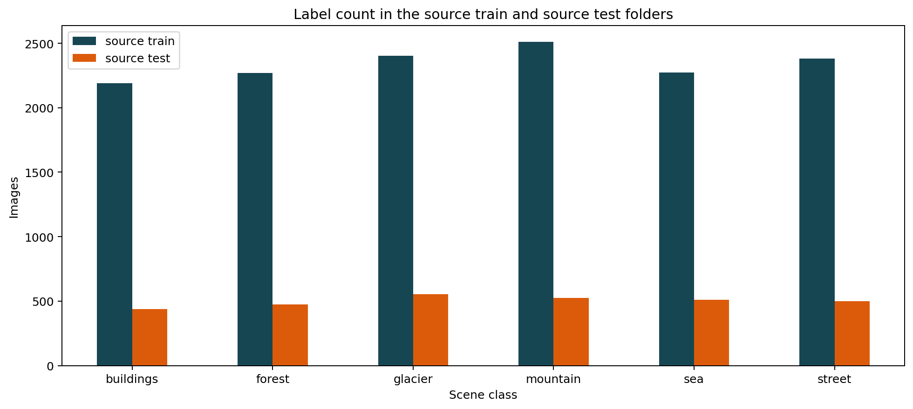
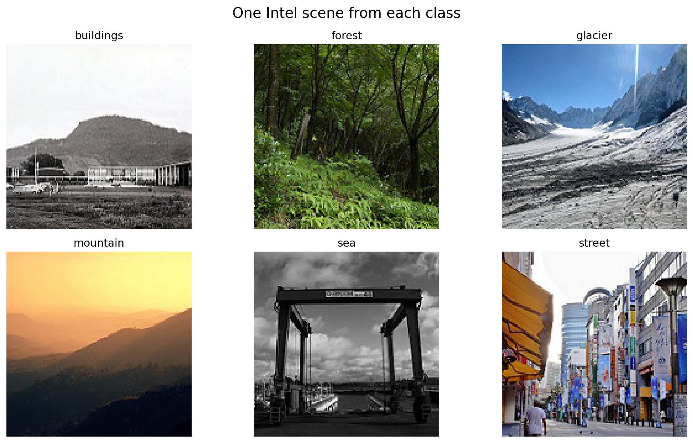
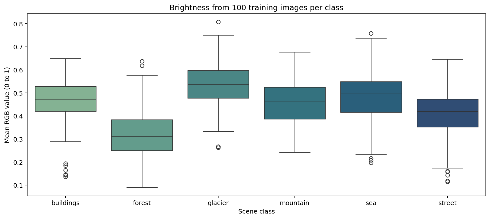
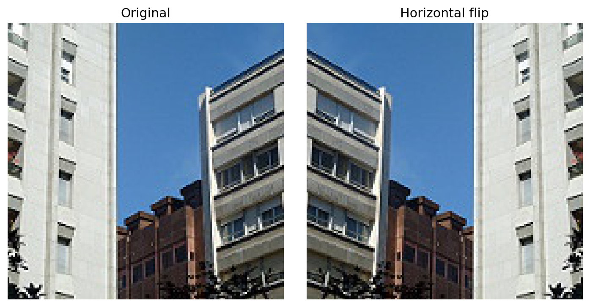
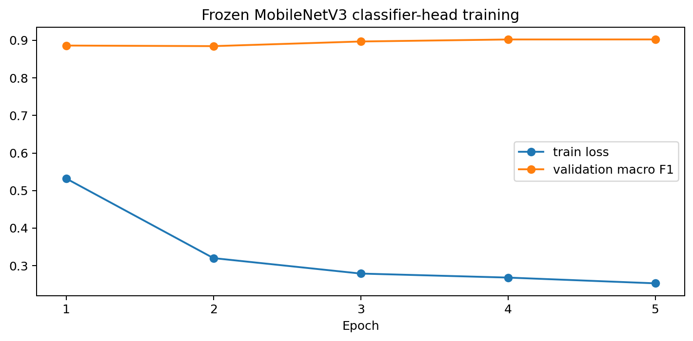
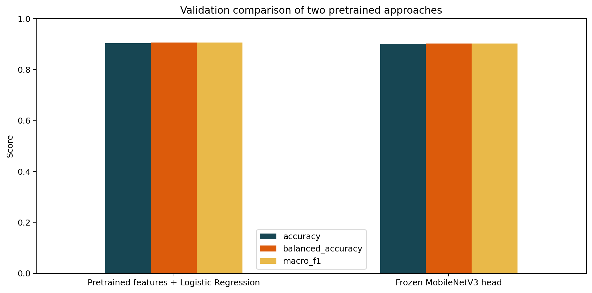
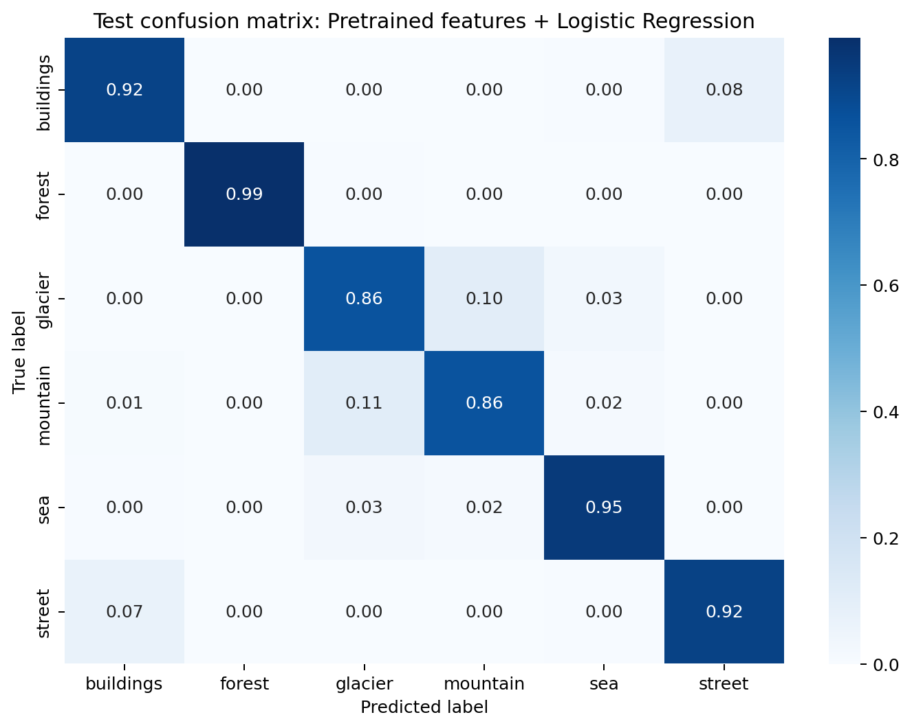
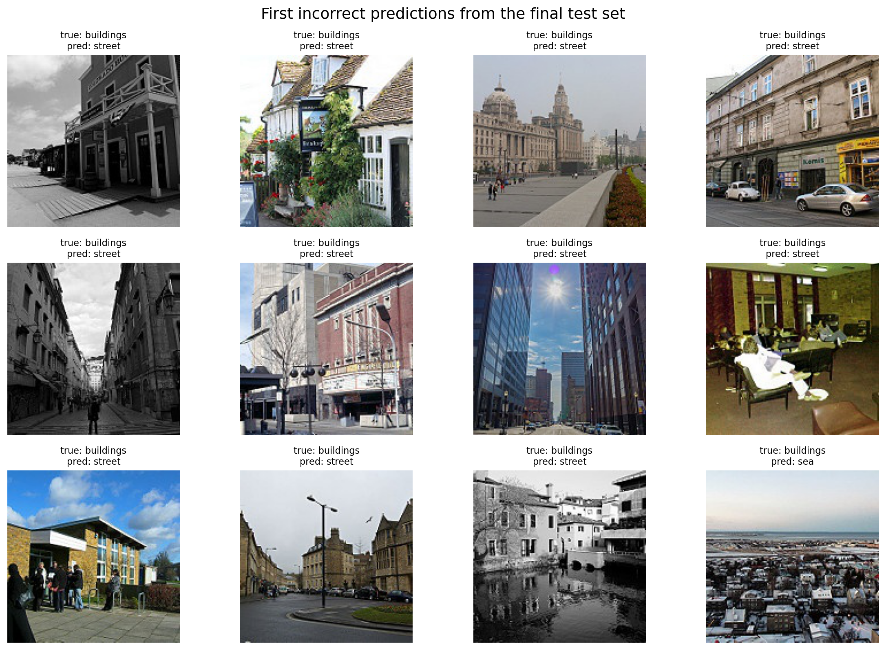

03 — TASKS / IMAGE
INTEL IMAGE CLASSIFICATION · SCENE RECOGNITION
Intel Image
Classification
Phân loại sáu loại cảnh quan từ ảnh RGB: buildings, forest, glacier, mountain, sea và street. Bài làm kiểm tra dữ liệu, trực quan hoá từng thành phần quan trọng và dùng MobileNetV3 pretrained theo cách dễ chạy lại.
01 — DATASET OVERVIEW
LABEL DISTRIBUTION / SOURCE FOLDERSFIG. 02

Predict one scene label from one RGB image: buildings, forest, glacier, mountain, sea, or street.
17,034 labelled images, six classes and 150 × 150 resolution satisfy the Image Data constraints without using a toy dataset.
Only the source training folder is split into train and validation data. The separate source test folder is not used for model selection.
02 — SCENE EXAMPLES & IMAGE QUALITY
ONE EXAMPLE FROM EACH CLASSFIG. 01

RGB BRIGHTNESS / 100 IMAGES PER CLASSFIG. 03

03 — PREPARATION, SPLIT & AUGMENTATION
HORIZONTAL FLIP / TRAINING ONLYFIG. 04

| Step | Decision | Reason |
|---|---|---|
| Resize and normalize | ImageNet transform | MobileNetV3 expects tensors in the scale used during pretraining. |
| Augmentation | Horizontal flip | Applied only on training images; the scene label remains unchanged. |
| Leakage control | Separate source test | Test images never enter feature fitting, head training, or validation-based selection. |
| Final metric | Macro F1 | Every scene class contributes equally to model selection and final reporting. |
04 — PRETRAINED MODEL COMPARISON
Reuse visual
features fairly.
Both approaches start from the same ImageNet-pretrained MobileNetV3-Small. Validation macro F1 chooses the final model; the source test folder remains untouched until that choice is made.
FROZEN HEAD / FIVE EPOCHSFIG. 05

TWO PRETRAINED APPROACHES / VALIDATIONFIG. 06

scene image→ImageNet transform→MobileNetV3 pretrained→six scene labels
05 — FINAL TEST RESULTS & ERROR REVIEW
NORMALIZED TEST CONFUSION MATRIXFIG. 07

INCORRECT TEST PREDICTIONSFIG. 08
